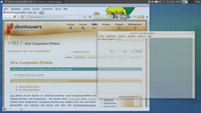
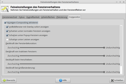

Xfce Composite-Effekte
Dieser Artikel wurde für die folgenden Ubuntu-Versionen getestet:
Ubuntu 16.04 Xenial Xerus
Ubuntu 14.04 Trusty Tahr
Zum Verständnis dieses Artikels sind folgende Seiten hilfreich:
 Xfce bietet ab der Version 4.x dezente Schatten- und Transparent-Effekte für (Popup-)Fenster und Programme, die über eine integrierte Composite-Erweiterung möglich sind. Sie sind fester Bestandteil der Desktop-Umgebung und lassen sich über den Einstellungsmanager konfigurieren. Die Einstellungsmöglichkeiten bzw. Effekte reichen zwar nicht an die Möglichkeiten von Compiz heran, lassen sich dafür aber mit minimalem Aufwand realisieren.
Xfce bietet ab der Version 4.x dezente Schatten- und Transparent-Effekte für (Popup-)Fenster und Programme, die über eine integrierte Composite-Erweiterung möglich sind. Sie sind fester Bestandteil der Desktop-Umgebung und lassen sich über den Einstellungsmanager konfigurieren. Die Einstellungsmöglichkeiten bzw. Effekte reichen zwar nicht an die Möglichkeiten von Compiz heran, lassen sich dafür aber mit minimalem Aufwand realisieren.
Bei Xubuntu sind diese Effekte in der Voreinstellung aktiv. Leider gibt es bei manchen Programmen bzw. in manchen Situation auch Probleme, die sich am einfachsten lösen lassen, wenn man das Compositing dann vorübergehend deaktiviert (siehe Problembehebung).
Benutzung¶
|  |
| Xfce-Desktop mit 3D-Effekten |
Die Erweiterung "Anzeigen-Compositing" befindet sich unter  "Einstellungen -> Feineinstellungen des Fensterverhaltens -> Compositor". Einfache Transparenz und Fensterschatten funktionieren ohne weitere Vorarbeit mit praktisch jeder Grafikkarte – zumindest wenn die freien Grafiktreiber benutzt werden. Eine Ausnahme können allerdings Grafikkarten sein, die um oder vor dem Jahr 2000 hergestellt wurden. Solche Grafikkarten sollte man grundsätzlich ohne aktives Compositing betreiben.
"Einstellungen -> Feineinstellungen des Fensterverhaltens -> Compositor". Einfache Transparenz und Fensterschatten funktionieren ohne weitere Vorarbeit mit praktisch jeder Grafikkarte – zumindest wenn die freien Grafiktreiber benutzt werden. Eine Ausnahme können allerdings Grafikkarten sein, die um oder vor dem Jahr 2000 hergestellt wurden. Solche Grafikkarten sollte man grundsätzlich ohne aktives Compositing betreiben.
Konfiguration¶
Um die Transparenz- und Schatteneffekte zu konfigurieren, gibt es diverse Einstellungsmöglichkeiten:
|  |
| Compositor-Einstellungen |
Anzeigen-Compositing aktivieren
Vollbildfenster mit Overlay anzeigen
Schatten unter normalen Fenstern anzeigen
Schatten unter Popup-Fenstern anzeigen
Zusätzlich lässt die Deckkraft (Transparenz) für die Fensterdekoration, inaktive Fenster, beim Verschieben, bei Größenänderung und bei Popup-Fenstern getrennt einstellen.
Problembehebung¶
Allgemeine Fehler¶
Der Composite-Manager von Xfce befindet sich immer noch in der Entwicklungsphase. Somit kann es zu folgenden Fehlern kommen:
Flackern des Bilds in Spielen und bei der Videowiedergabe (auch DVB-x)
Starke Performance-Einbrüche in Spielen, die auf OpenGL basieren
Abstürze von Xfce, sodass man wieder bei der grafischen Anmeldung via LightDM landet
Compositor umschalten¶
Wenn es zu Problemen mit dem Composite-Erweiterung kommt, kann man diese während des Betriebs wie oben beschrieben oder mit folgendem Befehl an- bzw. abschalten [1]:
xfconf-query --channel=xfwm4 --property=/general/use_compositing --type=bool --toggle
Besonders praktisch ist dieser Befehl in Kombination mit einem benutzerdefiniertem Tastenkürzel oder Programmstarter.
Links¶
Xfce4-Composite-Editor
 - alternatives Werkzeug zur Konfiguration der Composite-Effekte
- alternatives Werkzeug zur Konfiguration der Composite-EffekteXfce
 Übersichtsartikel
Übersichtsartikel
- Erstellt mit Inyoka
-
 2004 – 2017 ubuntuusers.de • Einige Rechte vorbehalten
2004 – 2017 ubuntuusers.de • Einige Rechte vorbehalten
Lizenz • Kontakt • Datenschutz • Impressum • Serverstatus -
Serverhousing gespendet von